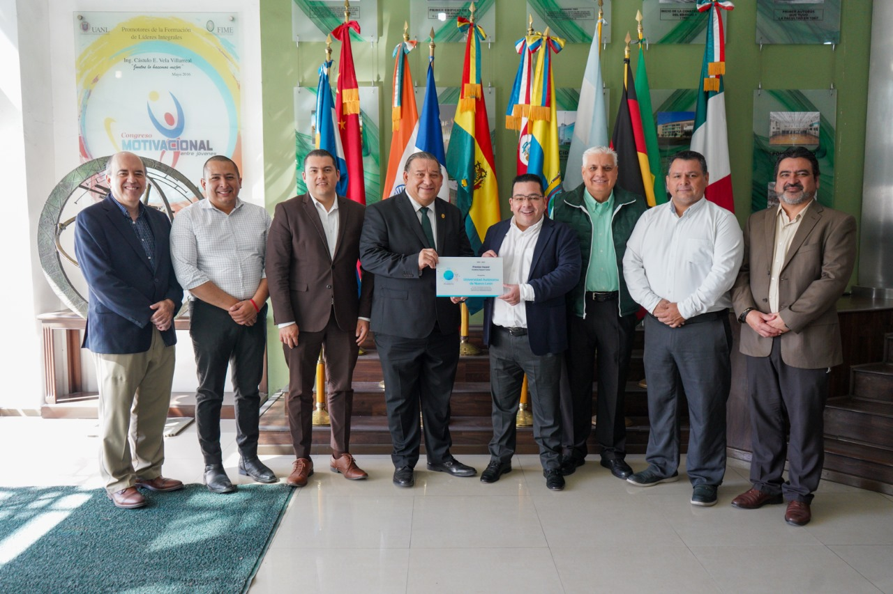

CISCO NETACAD OTORGA EL PREMIER AWARD ASC A LA FIME
Diego Mendez

Este pasado 22 de febrero la Facultad de Ingeniería Mecánica y Eléctrica, junto a la Universidad Autónoma de Nuevo León recibieron el Premier Award, Academy Support Center, un reconocimiento otorgado por Cisco Networking Academy, pero ¿qué representa este reconocimiento?
Cisco Networking Academy, o NetAcad, es un programa educativo creado por Cisco Systems, una compañía americana dedicada a la manufactura y mantenimiento de sistemas de telecomunicaciones. Cisco es una de las compañías más grandes en el mundo de las redes, los equipos y sistemas que vende son algunos de los más comúnmente utilizados en el área de sistemas de cualquier organización. De esta manera, su programa educativo es también considerado uno de los mejores en el mundo para cualquier estudiante o profesionista que desea entrar y especializarse en el área de redes.
El Premier Award, Academy Support Center es un reconocimiento otorgado por parte de la NetAcad a aquellos socios que han demostrado su compromiso y apoyo a el programa de Cisco. Para poder obtener este requerimiento es necesario que los socios de Cisco Networking Academy provean una educación de calidad, apoyen a los estudiantes con el plan de estudios, y cuenten con un buen número de estudiantes.
Este reconocimiento es otorgado a un número muy limitado de socios, por lo que aquellos que lo logran obtener se posicionan como algunos de los mejor capacitados en los temas de redes y equipos de telecomunicaciones.
En el caso de la FIME, cuatro cursos de Cisco son ofrecidos a los estudiantes, quienes dependiendo de su carrera podrán tomar estos cursos como optativas o materias obligatorias. Estos cursos son Introducción a las redes, Principios básicos de routing y switching, Escalamiento de redes, y Conexión de redes. Todos estos cursos forman parte del programa CCNA (Cisco Certified Network Associate) por lo que al completarlos es posible el tomar el examen de certificación de este programa y obtener dicha certificación. Esta es una certificación que valida los conocimientos fundamentales de los estudiantes en el tema de redes, lo cual genera múltiples oportunidades para poder obtener posiciones en el área de informática.

Esta certificación es también considerada como de “nivel-básico”, por lo que es casi un requerimiento en ciertas empresas. Por esta razón es recomendable que si algún estudiante busca entrar en el área de redes y telecomunicaciones haga lo posible por cursar los cuatro cursos de Cisco, además de obtener la certificación CCNA. Para obtener esta certificación es necesario presentar el examen CCNA 200-301, el cual tiene un costo de 300 dólares. Para presentar el examen no existen requisitos, sin embargo, debido a su elevado costo y a la complejidad de los temas es recomendable tener asesoría previa para obtener los mejores resultados.
Dentro de la FIME las carreras que toman los cursos de Cisco son la Ingeniería en Electrónica y Comunicaciones (quienes a tomaran los cuatro cursos antes de titularse) y la Ingeniería en Administración de Sistemas (quienes tomaran los últimos dos cursos como optativas si deciden especializarse en el área de redes). Otro beneficio para los estudiantes de la FIME que buscan obtener la certificación CCNA es que esta es también una opción de decimo semestre, por lo que aquellos que la consiguen pueden obtener 10 créditos de libre elección.
Si deseas seguir esta ruta, se recomienda hablar con tu jefe de carrera para que te puedan orientar en el proceso y puedas seguir los pasos necesarios para poder inscribir tu certificación de Cisco como materia de libre elección.
Estas son algunas de las oportunidades y servicios ofrecidos en la FIME con relación a Cisco, y, además, algunas de las razones por las cuales la facultad es ahora reconocida por la NetAcad como uno de los mejores lugares para estudiar su programa, lo que quiere decir que si buscas certificarte en Cisco no hay mejor lugar que la FIME.